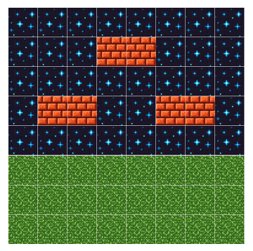

{kind=link}
{kind=link}
{kind=link}
import turtle
tiles = {'b':'brick.gif', 'g':'grass.gif', 's': 'sky.gif'}
for i in tiles:
turtle.register_shape(tiles[i])
level = []
f = open("level.txt", "r")
for x in f:
level.append(x[0:len(x)-1])
pen = turtle.Turtle()02-16-24 (Friday)
1 Lectionary reading
2 Example: tile drawing
Let’s use some loops to draw a tiled scenery using Turtle graphics!

Download the images for the three tiles we will be using: grass, sky and brick. Notice that all tiles are of size 42x42.
Now, look at this starter code:
It is loading a file called level.txt. This file could have different arrangements of characters, which are depicting the three types of blocks. For example, your level.txt file could be:
ssssssss
sssbbsss
ssssssss
sbbssbbs
ssssssss
gggggggg
gggggggg
ggggggggThese characters are loaded and stored in the list of lists (matrix!) level.
Now, how can we draw these tiles in the screen? To make the turtle “print” an image — for example, a grass tile —, you have to set:
pen.shape(level['g']) # sets the shape of the turtle of type 'grass'
pen.stamp() # "stamps" the turtleLet’s then construct a loop to draw all the tiles in the matrix level!
3 List comprehensions
Python offers a shorter syntax when you want to create a new list based on the values of an existing sequence.
For example:
names = ["Anakin", "Luke", "Leia"]
names_with_last_name = [ n+" Skywalker" for n in names]
print(names_with_last_name)['Anakin Skywalker', 'Luke Skywalker', 'Leia Skywalker']3.1 Other examples:
Using ranges:
length = 15
exponents2 = [ 2**i for i in range(length)]
print(exponents2)[1, 2, 4, 8, 16, 32, 64, 128, 256, 512, 1024, 2048, 4096, 8192, 16384]Nesting comprehensions:
w = 4
h = 4
zero_matrix = [ [0 for j in range(h)] for i in range(w)]
print(zero_matrix)[[0, 0, 0, 0], [0, 0, 0, 0], [0, 0, 0, 0], [0, 0, 0, 0]]3.2 Examples:
Checking conditions:
x = [3, 6, -2, 5, -12, 5, -1]
only_positives = [i for i in x if i > 0]
print(only_positives)[3, 6, 5, 5]fruits = ["apple", "banana", "cherry", "kiwi", "mango"]
newlist = [x for x in fruits if "a" in x]
print(newlist)['apple', 'banana', 'mango']3.3 Creating a scenario (see our tile drawing exercise)
level = [['s' if j<8 else 'g' for i in range(10)] for j in range(10)]4 Pattern: accumulator
- An accumulator is the name we give to a variable that is updated at each loop.
- For example, identify the accumulator variables in the following code:
product = 1
count = 0
while count < 5:
number = int(input("Enter an integer:"))
product *= number
print("The total product is", product)4.1 Example: Fibonacci sequence
acc1 = 1
acc2 = 1
fib = [1, 1]
length_fib = 10
i = 1
while i < length_fib:
next_number = acc1 + acc2
fib.append(next_number)
acc1 = acc2
acc2 = next_number
i += 1
print("The Fibonnaci sequence is", fib)5 Pattern: flags
- A flag is a programming pattern: a boolean variable that acts as a signal to the program to determine whether or not the program as a whole or a specific section of the program should run.
- For example, you can set the flag to
Trueand the program will run continuously until any type of event makes itFalse. Then the program, loop, or whatever you’re using a flag for will stop, or do something else.
- For example, you can set the flag to
5.1 What are the flags in this code?
newlist = []
number = int(input("Enter a number: "))
newlist.append(number)
ascending = True
descending = True
while True:
next_number = input("Enter a number: ")
if next_number == '':
break
if int(next_number) < number:
ascending = False
else:
descending = False
newlist.append(int(next_number))
number = int(next_number)
if ascending:
print("Sequence is in ascending order")
elif descending:
print("Sequence is in descending order")
else:
print("Sequence is not ordered")6 The ethics of automation
- Algorithms are formal specifications of automation. And loops enable us to scale those.
“Digital computers were invented as a way of replacing people with something faster, less error prone, and tireless, mirroring the productivity values of the industrial revolution.” - Amy Ko, Computers
- When is this good? When to automate? When to not automate?
“The key question isn’t ‘How much will be automated?’ It’s how we’ll conceive of whatever can’t be automated at a given time” - Jaron Lanier, Who Owns the Future?
6.1 Narratives about automation…
A golem is an animated, anthropomorphic being in Jewish folklore, which is entirely created from inanimate matter, usually clay or mud. The most famous golem narrative involves Judah Loew ben Bezalel, the late 16th-century rabbi of Prague. In Modern Hebrew, golem is used to mean “dumb” or “helpless”, or a pupa. Similarly, it is often used today as a metaphor for a mindless lunk or entity that serves a man under controlled conditions but is hostile to him under other conditions.
Disney’s The Sorcerer’s Apprentice - a tale about dumb automation
The job displacement debate - will automation take over?
What are your opinions about automation?
6.2 Ancient narratives about work
In the Akkadian Epic of Atrahasis humans were created so that they could “assume the drudgery of the god.”
In the Sumerian myth Enki and Ninmah they were created so that the gods would “be freed from their toil.”
In the Babylonian Enuma Elish the god Marduk creates man “on whom the toil of the gods [would] be laid that they may rest.”71
These myths carry not only the etiological account of humankind but also lay judgment on the nature and purpose of human labor — it is in essence just a burden, and we need to pass it along to the less powerful.
“What has a man from all the toil and striving of heart with which he toils beneath the sun? For all his days are full of sorrow, and his work is a vexation. Even in the night his heart does not rest. This also is vanity.
There is nothing better for a person than that he should eat and drink and find enjoyment in his toil. This also, I saw, is from the hand of God, for apart from him who can eat or who can have enjoyment? For to the one who pleases him God has given wisdom and knowledge and joy, but to the sinner he has given the business of gathering and collecting, only to give to one who pleases God. This also is vanity and a striving after wind. Ecclesiastes 2.22-26
- In the Genesis account, God is not burdened by his work but rather takes delight in it. And humanity, rather than being created to relieve him from work, was made to share in it. The principle connecting humanity’s origin with the purpose of work is not delegation but participation.
6.3 Delegation
- By delegating everything to machines, we alienate ourselves from life, from meaning, from purpose.
“Our contact with reality has been attenuated to the pushing of buttons and the turning of handles. The results are guaranteed by machinery that is not of our design and often beyond our understanding. Hence the feelings of liberation and enrichment quickly fade; the new devices lose their glamour and meld into the conspicuous periphery of normalcy; boredom replaces exhilaration.” Albert Borgmann, Technology and the Character of Contemporary Life
6.4 Engagement
Instead of disengaging, technology should help us to engage more with the world and how it reveals God’s glory to us. This doesn’t exclude automation, but gives it a purpose.
What are ways you can think of about engaging more with…
- People/Community?
- Places?
- Nature?
- Your body?
- Art? (including skillful practices - cooking, crafting…?)
- Specific moments of life? (see James K. A. Smith’s “How to Inhabit Time”)
- The reality of suffering, misery, and “creation’s groaning and waiting for redemption”?